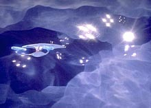
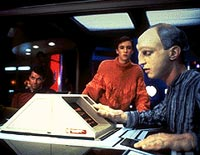

|
MANCHETE
DO EPISDIO
Segmento
representa muito bem a
essncia de Jornada nas Estrelas
Episdio
anterior | Prximo
episdio
Sinopse:
Data Estelar: 41263.1.
 Um
expert em propulso da Frota Estelar, chamado Kosinski, e seu
assistente aliengena, o Viajante (Traveller, no original), vo a
bordo da Enterprise para aumentar a capacidade de dobra da nave.
Mas algo sai terrivelmente errado e, depois de duas aceleraes em
dobra, a Enterprise vai parar a 350 milhes de anos-luz de distncia,
numa dimenso onde os mundos fsico e mental se confundem.
Para retornar, levaria mais de trs sculos! A nica maneira de
voltar atravs dos poderes inexplicados do Viajante. O problema
que ele est morrendo.
Comentrios:
A se julgar pelo nome, os fs poderiam esperar mais um
remake da Srie Clssica, mas isso no poderia estar mais longe
da realidade. "Where No One Has Gone Before"
representa, de uma tacada s, a essncia de Jornada nas Estrelas,
um conceito absolutamente original no franchise e o melhor episdio
de A Nova Gerao at ento produzido.
O episdio uma jia em termos de efeitos visuais. As imagens da
Enterprise na galxia M33 e, depois, no ponto em que pensamento e
realidade se misturam so, para resumir, espetaculares.
A histria uma prova viva de que o real desenvolvimento dos
personagens se d naturalmente, quando eles se encontram face a
situaes especficas, e no artificialmente, como foi tentado
em "The Naked Now".
Temos um insight muito melhor de Picard nos poucos momentos em que
ele conversa com sua me, ao contrrio do que ocorre no episdio
em que a falsa embriaguez o leva a fazer papel de bobo com a doutora
Beverly Crusher.
Cientificamente falando, a histria at forada. Mas isso
conta muito pouco, quando a aventura de explorao torna-se
internamente consistente e to interessante para o telespectador. A
fico fala mais alto que a realidade.
Pela primeira vez, Troi (embora ainda de forma muito discreta) tem
uma funo na nave, servindo de termmetro para as reaes da
tripulao.
 Alm
disso, o episdio oferece diversos desdobramentos para o resto da srie:
incentivado pelo Viajante, Picard promove Wesley Crusher a alferes
honorrio, o que faria a apario do personagem ainda mais
constante. Como consolo, isso tambm representa o primeiro passo
para que Wesley deixasse a srie. H males que vm para bem.
"Where No One Has Gone Before" faz jus ao
nome. Jornada nas Estrelas em sua essncia --a explorao do
desconhecido, levada aos seus limites. Um dos melhores episdios do
atribulado primeiro ano de A Nova Gerao.
Citaes:
Viajante - "Up until
now, you have been... uninteresting. It's only now that your
lifeform begins to merit serious attention."
(At agora, vocs eram... desinteressantes. S agora sua forma de
vida comea a merecer sria ateno.)
Riker - "Shall I call for Doctor Crusher, sir?"
(Devo chamar a doutora Crusher, senhor?)
Picard - "Why? Is someone ill?"
(Por qu? Tem algum doente?)
Trivia:
 O ator que interpretou o personagem Viajante, Eric Menyuk, esteve prximo
de conseguir o papel de Data, na poca em que os atores estavam
sendo contratados.
O ator que interpretou o personagem Viajante, Eric Menyuk, esteve prximo
de conseguir o papel de Data, na poca em que os atores estavam
sendo contratados.
Biff Yeager estria aqui como o Engenheiro-Chefe de nome Argyle,
ficando por vrios episdios no cargo, at a transferncia de
LaForge para esta funo. Porm neste episdio Riker o apresenta
como "Um dos nossos Engenheiros-Chefes".
O nome da me de Picard, que
aparece neste episdio, somente ser revelado no episdio do 6
ano "Chain of Command, Part
II". Seu nome era Gessard Picard.
O Viajante ainda voltaria mais duas
vezes, at o final da srie, nos episdios "Remember
Me" do 4 ano e "Journeys
End", do 7 ano de produo.
Ficha
tcnica:
Histria de C.J. Holland
Roteiro de Tracy Torm & Lan O'Kun
Direo de Richard Compton
Exibido em 30/11/1987
Produo: 006
Elenco:
Patrick Stewart como
Jean-Luc Picard
Jonathan Frakes como William Thomas Riker
Brent Spiner como Data
LeVar Burton como Geordi La Forge
Michael Dorn como Worf
Gates McFadden como Beverly Crusher
Marina Sirtis como Deanna Troi
Wil Wheaton como Wesley Crusher
Denise Crosby como Natasha "Tasha" Yar
Elenco convidado:
Majel Barrett como Lwaxana Troi
Rob Knepper como Wyatt Miller
Nan Martin como Victoria Miller
Robert Ellenstein como Steven Miller
Carel Katarina como sr. Homn
Raye Birk como Wrenn
Danitza Kingsley como Ariana
Michael Rider como chefe do transporte
Episdio
anterior | Prximo
episdio
|